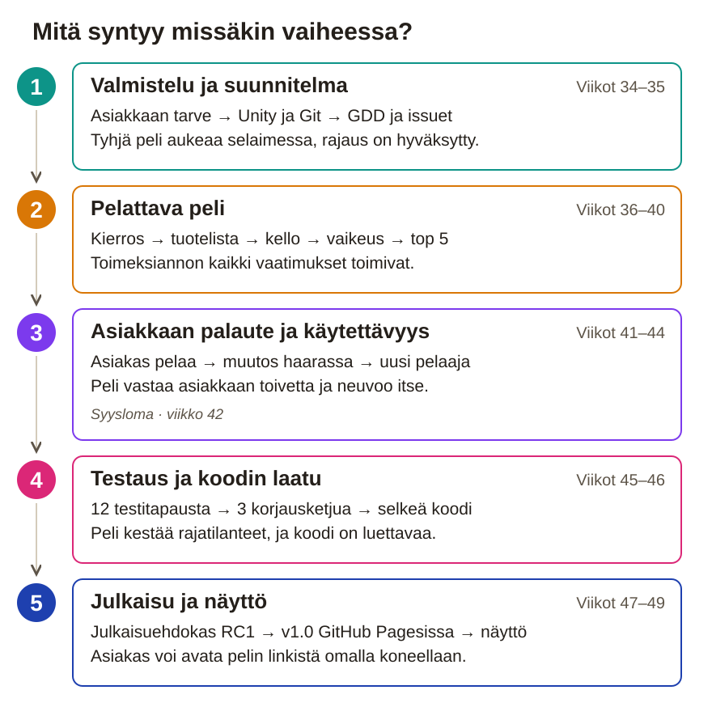

Paperinen työpaketti
Viikot 34–49
Tämä paketti on aikataulu ja tarkistuslista tilanteisiin, joissa sivusto ei ole auki. Projektipäiväkirja kirjoitetaan sivustolla ja viedään repositoryn project-docs-kansioon. Rasti tässä vihossa ei ole palautus: työ on aina Git-repositoryssa.
KahvilaKoodi on koulun kahvilapeli, jota pelataan selaimessa. Pelaaja palvelee tiskille saapuvia asiakkaita kellon käydessä, kiire kasvaa pisteiden mukana, ja parhaat tulokset säilyvät top 5 -listalla.

1. Valmistelu ja suunnitelma · viikot 34–35. Selvität asiakkaan tarpeen, teet Unity-projektin ja Git-repositoryn ja kokeilet tyhjää peliä selaimessa. Suunnitelma, GitHub-issuet ja hyväksytty rajaus valmistuvat ennen koodia, jotta rakennat oikeaa peliä.
2. Pelattava peli · viikot 36–40. Rakennat pelin toiminto kerrallaan: kierros, tuotelista, kello ja pisteet, kasvava vaikeus ja top 5 -lista. Vaiheen lopussa toimeksiannon kaikki vaatimukset toimivat, joten asiakas voi kokeilla koko peliä.
3. Asiakkaan palaute ja käytettävyys · viikot 41–44. Asiakas pelaa väliversiota, ja toteutat yhdessä sovitun muutoksen omassa Git-haarassa. Sen jälkeen uusi pelaaja kokeilee peliä ilman neuvoja, ja korjaat kaksi suurinta ongelmaa.
4. Testaus ja koodin laatu · viikot 45–46. Testaat koko pelin 12 testitapauksella, korjaat kolme virhettä ketjuna ja selkeytät yhden koodikohdan katselmoinnin avulla. Laatu varmistetaan ennen julkaisuehdokasta, koska sen jälkeen peliin ei lisätä uutta.
5. Julkaisu ja näyttö · viikot 47–49. Jäädytät ominaisuudet, annat julkaisuehdokkaan RC1 asiakkaan testattavaksi ja julkaiset version v1.0 GitHub Pagesiin. Lopuksi kokoat näyttöaineiston ja harjoittelet demon.
Viikon työvaihe on tämän sivuston työohje. Kun teet muutoksen peliin, kirjaa se GitHub-issueksi ja tee se Työtapa-sivun kuudella askeleella. Valmiiseen issueen lisätään kommentti ja linkki commitiin, testien tulokset ja viikon yhteenveto kirjataan projektipäiväkirjaan.
| Vko | Pvm | Viikon aihe | Vaihe |
|---|---|---|---|
| 34 | 17.–21.8. | Aloitus: peli-idea ja työkalut | 1 |
| 35 | 24.–28.8. | Pelin suunnitelma: ruudut ja feature-lista | 1 |
| 36 | 31.8.–4.9. | Feature 1 · Ensimmäinen pelattava kierros | 2 |
| 37 | 7.–11.9. | Feature 2 · Kahvilan oikea tuotelista | 2 |
| 38 | 14.–18.9. | Feature 3 · Kello, pisteet ja palaute | 2 |
| 39 | 21.–25.9. | Feature 4 · Kasvava kiire | 2 |
| 40 | 28.9.–2.10. | Feature 5 · Top 5 -tuloslista | 2 |
| 41 | 5.–9.10. | Katselmointi · Asiakas pelaa peliäsi | 3 |
| 42 | 12.–16.10. | Syysloma – ei projektityötä | – |
| 43 | 19.–23.10. | Feature 6 · Asiakkaan toivoma parannus | 3 |
| 44 | 26.–30.10. | Feature 7 · Peli ohjaa pelaajaa itse | 3 |
| 45 | 2.–6.11. | Pelin laatu · Peli kestää pelaamista | 4 |
| 46 | 9.–13.11. | Pelin laatu · Koodi, jonka toinen ymmärtää | 4 |
| 47 | 16.–20.11. | Pelin julkaisu · Ensimmäinen julkaisuehdokas RC1 testipelattavana | 5 |
| 48 | 23.–27.11. | Pelin julkaisu · v1.0 julki | 5 |
| 49 | 30.11.–4.12. | Näyttö · Aineisto ja luovutus | 5 |
Yhteys kokonaisprojektiin: Projekti alkaa asiakkaan toimeksiannosta, joka ei vielä kerro kaikkea: kysymyksillä selvität avoimet asiat ennen kuin rakennat mitään. Samalla teet Unity-projektin ja Git-repositoryn ja kokeilet, että tyhjä peli aukeaa selaimessa, koska koko peli julkaistaan lopuksi selainversiona. Vastaukset ja toimiva työympäristö ovat pohja viikon 35 suunnitelmalle.
Viikon tavoite: Tyhjä CafeGame-peli aukeaa selaimessa, ja tiedät asiakkaan vastauksista, millainen peli tehdään ja kenelle.
Työvaihe 1 / 5 · Lue toimeksianto ja kirjoita kuusi kysymystä asiakkaalle.
Valmis kun: Sinulla on kuusi erilaista kysymystä, ja jokaisen perässä lukee, minkä päätöksen vastaus ratkaisee.
Tallenna työnäyte: Kysymyslista viikon 34 päiväkirjaan, kenttään Mitä tein ja miten?
Työvaihe 2 / 5 · Pidä aloituskeskustelu ja kirjaa asiakkaan vastaukset.
Valmis kun: Päiväkirjassa on jokaiselle kuudelle kysymykselle joko asiakkaan vastaus tai merkintä avoin sekä lista pakollisista (P0) ominaisuuksista.
Tallenna työnäyte: Vastaukset ja avoimet asiat viikon 34 päiväkirjaan.
Työvaihe 3 / 5 · Luo Unity-projekti ja kokeile, aukeaako se selaimessa.
Valmis kun: Tyhjä CafeGame-peli aukeaa selaimeen, ja tiedät käyttämäsi Unity-version.
Tallenna työnäyte: Unity-versio viikon 34 päiväkirjaan. Kuvakaappaus auenneesta selainversiosta, jonka viet työvaiheessa 5 polkuun project-docs/evidence/week-34/web-test.png.
Työvaihe 4 / 5 · Luo Git-repository ja kloonaa se koneellesi.
Valmis kun: Repository on GitHubissa, ja Unity Hub avaa CafeGame-projektin repositoryn kansiosta.
Tallenna työnäyte: Repositoryn linkki viikon 34 päiväkirjaan.
Työvaihe 5 / 5 · Tee ensimmäinen commit ja push.
Valmis kun: Commit näkyy GitHubissa. Repositoryssa ovat Assets-, Packages-, ProjectSettings- ja project-docs-kansiot sekä README.md.
Tallenna työnäyte: Repositoryn linkki ja ensimmäisen commitin tunniste (7 merkin koodi GitHubin commit-listassa, esimerkiksi a1b2c3d) viikon 34 päiväkirjaan.
Viikon lopputarkistus: Asiakkaan vastaukset ja avoimet asiat ovat päiväkirjassa, tyhjä peli aukeaa selaimessa ja ensimmäinen commit näkyy GitHubissa.
Työnäyte Git-repositoryyn ennen rastia: kysymykset ja asiakkaan vastaukset päiväkirjassa, kuvakaappaus selainversiosta, repository-linkki ja ensimmäinen commit.
Yhteys kokonaisprojektiin: Viikon 34 asiakasvastausten perusteella muutat toimeksiannon suunnitelmaksi: pelin säännöt GDD:hen, pienet GitHub-issuet, ruutujen luonnos ja skriptien kartta. Rajaus estää peliä kasvamasta liian suureksi, ja Valmis kun -ehdoista näet, milloin työn voi testata. Viikosta 36 alkaen rakennat ruudut luonnoksen ja skriptit kartan mukaan.
Viikon tavoite: Peli on suunniteltu ennen koodia: GDD on repositoryssa, GitHub-issuet on priorisoitu ja ohjaaja on hyväksynyt rajauksen.
Työvaihe 1 / 5 · Täytä pelin suunnitteludokumentti (GDD) ja vie se repositoryyn.
Valmis kun: Tiedosto project-docs/gdd.md näkyy GitHubissa, eikä yhdessäkään OMA-merkityssä kentässä ole tyhjää kohtaa. ASIAKAS-merkitty kierroksen pituus saa jäädä avoimeksi.
Tallenna työnäyte: project-docs/gdd.md ja commit-linkki viikon 35 päiväkirjaan.
Työvaihe 2 / 5 · Pilko ensimmäiset featuret pieniksi GitHub-issueiksi.
Valmis kun: GitHubissa on issuet kahdelle ensimmäiselle featurelle ja yksi issue kustakin muusta. Jokaisessa on arvio ja Valmis kun -ehto.
Tallenna työnäyte: Linkki GitHubin Issues-listaan viikon 35 päiväkirjaan.
Työvaihe 3 / 5 · Merkitse jokaiselle issuelle, onko se pakollinen, tärkeä vai lisä.
Valmis kun: Jokaisella issuella on yksi label: P0 pakollinen, P1 tärkeä tai P2 lisä. Ohjaaja on hyväksynyt listan.
Tallenna työnäyte: Linkki Issues-listaan sekä hyväksyjän rooli ja päivä viikon 35 päiväkirjaan.
Työvaihe 4 / 5 · Piirrä pelin kolme ruutua paperille.
Valmis kun: Kuvassa on kolme ruutua, ja nuolet näyttävät, mihin Aloita ja Pelaa uudelleen vievät ja milloin peli siirtyy tulosruutuun.
Tallenna työnäyte: Kuva polkuun project-docs/evidence/week-35/mockup.png, commit ja push.
Työvaihe 5 / 5 · Piirrä kartta pelin C#-skripteistä ja niiden tehtävistä.
Valmis kun: Kuvassa on viisi skriptiä, jokaisella oma tehtävä, ja nuolet näyttävät, mistä tuotteet ja tulokset kulkevat.
Tallenna työnäyte: Kuva polkuun project-docs/evidence/week-35/unity-rakenne.png, commit ja push.
Viikon lopputarkistus: Tiedosto gdd.md on repositoryssa, jokaisella issuella on arvio, tärkeysluokka – pakollinen (P0), tärkeä (P1) tai lisä (P2) – ja Valmis kun -ehto, ja ohjaaja on hyväksynyt rajauksen. Luonnoksessa näkyvät valikko, peli ja tulos.
Työnäyte Git-repositoryyn ennen rastia: gdd.md, Issues-lista prioriteetteineen, rajauksen hyväksyntä, mockup.png ja unity-rakenne.png.
Yhteys kokonaisprojektiin: Viikon 35 luonnoksesta ja skriptien kartasta tulee nyt ensimmäinen pelattava versio. Rakennat kolme ruutua ja GameManagerin, ja yksi kiinteä kahvitilaus riittää, koska pieni alusta loppuun toimiva peli paljastaa Canvasin ja painikkeiden kytkentävirheet aikaisin. Viikolla 37 kiinteä kahvi vaihtuu tuotelistasta arvottuun tilaukseen.
Viikon tavoite: Peliä voi pelata alusta loppuun: Aloita → asiakas tilaa kahvin → pelaaja toimittaa → tulosruutu näyttää pisteet.
Työvaihe 1 / 5 · Rakenna Unityyn valikkoruutu.
Valmis kun: Hierarchyssä on Canvas ja sen alla kolme paneelia. MenuPanelissa näkyvät pelin nimi ja Aloita-painike.
Tallenna työnäyte: Commit ja push. Commit-linkki viikon 36 päiväkirjaan.
Työvaihe 2 / 5 · Rakenna peli- ja tulosruutu.
Valmis kun: Hierarchy näyttää samalta kuin avun rakenne (Main Camera, Global Light 2D ja EventSystem saavat olla lisäksi), ja Play-tilassa näkyy vain valikko.
Tallenna työnäyte: Kuvakaappaus Hierarchy-ikkunasta polkuun project-docs/evidence/week-36/hierarchy.png, commit ja push. Polku viikon 36 päiväkirjan kenttään Missä työnäyte on?
Työvaihe 3 / 5 · Tee GameManager-skripti, joka vaihtaa ruutua.
Valmis kun: Play-tilassa Aloita vaihtaa valikon peliruutuun.
Tallenna työnäyte: Commit ja push. Commit-linkki viikon 36 päiväkirjaan.
Työvaihe 4 / 5 · Tee ensimmäinen tilaus: asiakas tilaa kahvin ja pelaaja toimittaa sen.
Valmis kun: Aloita → Kahvi → Toimita → tulosruudulla lukee 10 pistettä.
Tallenna työnäyte: Commit ja push. Commit-linkki viikon 36 päiväkirjaan.
Työvaihe 5 / 5 · Testaa kierros kolme kertaa selaimessa ja kirjaa tulokset.
Valmis kun: Päiväkirjassa on kolme testikierrosta tuloksineen, ja viimeinen kierros meni odotetusti.
Tallenna työnäyte: Kolme kuvaa tai lyhyt video pelipolusta kansioon project-docs/evidence/week-36/, commit ja push. Testikirjaukset ja commit-linkki viikon 36 päiväkirjaan.
Viikon lopputarkistus: Aloita → Kahvi → Toimita → tulosruutu näyttää pisteet. Polku toimii selainversiossa ilman, että kosket Unity-editoriin kesken pelin.
Työnäyte Git-repositoryyn ennen rastia: video tai kuvat pelipolusta, kolme testikierrosta päiväkirjassa ja commit-linkit.
Yhteys kokonaisprojektiin: Viikon 36 kierros toimii, mutta kahvi on kirjoitettu suoraan koodiin. Nyt tuotteet luetaan erillisestä products.json-tiedostosta, kuten toimeksianto vaatii, ja OrderManager arpoo tilauksen ja tarkistaa toimituksen. Tilaus ja sen pisteet ovat pohja viikon 38 kellolle, palautteelle ja pelisäännöille.
Viikon tavoite: Asiakas tilaa 1–3 tuotetta, jotka arvotaan products.json-tiedostosta, ja tuotteita voi muuttaa koskematta C#-koodiin.
Työvaihe 1 / 5 · Kirjoita kahvilan tuotteet products.json-tiedostoon.
Valmis kun: Unityn Inspector näyttää products.json-tiedoston, ja siinä on kolme tuotetta.
Tallenna työnäyte: Commit ja push. Tiedoston polku viikon 37 päiväkirjaan.
Työvaihe 2 / 5 · Lue tuotteet tiedostosta ProductDatabase-skriptillä.
Valmis kun: Avun tarkistustestissä Console näyttää Kahvi, ja molemmat TODO-kohdat on täydennetty.
Tallenna työnäyte: Commit ja push. Commit-linkki viikon 37 päiväkirjaan.
Työvaihe 3 / 5 · Arvo asiakkaalle 1–3 tuotteen tilaus OrderManager-skriptillä.
Valmis kun: Play-tilassa tilaus vaihtuu joka pelissä, ja siinä on 1–3 tuotetta.
Tallenna työnäyte: Commit ja push. Commit-linkki ja viiden tilauksen lista viikon 37 päiväkirjaan.
Työvaihe 4 / 5 · Tee tuotepainikkeet ja tarkista, menikö toimitus oikein.
Valmis kun: Oikea toimitus antaa tuotteiden pisteet yhteensä, ja väärä toimitus antaa 0 pistettä.
Tallenna työnäyte: Commit ja push. Commit-linkki ja kahden toimituksen tulos viikon 37 päiväkirjaan.
Työvaihe 5 / 5 · Testaa tuotelista kolmella testillä.
Valmis kun: Kaikki kolme testiä menivät odotetusti, ja tulokset ovat päiväkirjassa.
Tallenna työnäyte: Testien tulokset ja tiedon kulku viikon 37 päiväkirjaan.
Viikon lopputarkistus: Kun muutat kahvin pistearvon products.json-tiedostossa, muutos näkyy pelissä ilman C#-muutosta. Jos tiedosto puuttuu tai on rikki, peli näyttää virheilmoituksen eikä kaadu.
Työnäyte Git-repositoryyn ennen rastia: products.json, ProductDatabase.cs ja OrderManager.cs committeina sekä kolmen testin tulokset.
Yhteys kokonaisprojektiin: Viikon 37 tilaus ja toimituksen tarkistus antavat pisteet, mutta peli päättyy vielä ensimmäiseen toimitukseen. Kirjoitat ensin pelisäännöt GDD:n pisteytyksen pohjalta ja lisäät sitten ajastimen, palautteen ja rajatestit, jotta pelaaja voi tehdä päätöksiä ajan ja tuloksen perusteella. Kun kierros kestää ajan loppuun, viikolla 39 kiirettä voi kasvattaa.
Viikon tavoite: Kello laskee, pelaaja näkee heti, menikö toimitus oikein, ja kierros päättyy kerran, kun aika loppuu.
Työvaihe 1 / 4 · Kirjoita pelin säännöt ennen koodaamista.
Valmis kun: Päiväkirjassa on viisi numeroitua sääntöä lukuarvoineen.
Tallenna työnäyte: Säännöt viikon 38 päiväkirjaan.
Työvaihe 2 / 4 · Lisää peliin ajastin, joka päättää kierroksen.
Valmis kun: Play-tilassa aika laskee, pelaaja voi toimittaa monta tilausta ja tulosruutu aukeaa kerran, kun aika on 0.
Tallenna työnäyte: Commit ja push. Commit-linkki viikon 38 päiväkirjaan.
Työvaihe 3 / 4 · Näytä pelaajalle heti, menikö toimitus oikein.
Valmis kun: Oikea ja väärä toimitus näyttävät eri palautteen, ja pisteet muuttuvat sääntöjen mukaan.
Tallenna työnäyte: Kuvakaappaukset molemmista palautteista kansioon project-docs/evidence/week-38/, commit ja push. Polut viikon 38 päiväkirjaan.
Työvaihe 4 / 4 · Testaa pelin kolme rajatilannetta.
Valmis kun: Kolmen rajatestin odotetut ja todelliset tulokset on kirjattu, ja viimeinen ajo meni odotetusti.
Tallenna työnäyte: Testien tulokset ja korjausten commit-linkit viikon 38 päiväkirjaan.
Viikon lopputarkistus: Peli päättyy kerran, kun aika loppuu. Nopea kaksoispainallus ei anna kahta tulosta, ja uusi peli nollaa ajan sekä pisteet.
Työnäyte Git-repositoryyn ennen rastia: pelisäännöt, ajastimen ja palautteen commitit sekä kolmen rajatestin tulokset.
Yhteys kokonaisprojektiin: Viikon 38 kello ja pisteet tekevät pelistä kierroksen, mutta kiire pysyy samana alusta loppuun. Toimeksianto vaatii kasvavaa vaikeutta, joten vertaat ensin kahta tapaa ja rakennat valitun tavan tasot yhteen Inspectorissa säädettävään listaan. Kun tasot ovat yhdessä paikassa, niitä voi säätää testien ja palautteen jälkeen koskematta koodiin.
Viikon tavoite: Peli vaikeutuu pisteiden mukaan kolmella tasolla: tilaukset isonevat tai asiakkaat odottavat lyhyemmän ajan.
Työvaihe 1 / 3 · Vertaa kahta tapaa vaikeuttaa peliä ja tee valinta.
Valmis kun: Päiväkirjassa ovat molemmat tavat, kolmen kysymyksen vastaukset, valinta ja kaksi perustelua.
Tallenna työnäyte: Vertailu ja valinta viikon 39 päiväkirjaan.
Työvaihe 2 / 3 · Tee kolme vaikeustasoa, joita voi säätää Inspectorissa.
Valmis kun: Omilla raja-arvoillasi (esimerkiksi 0, 31 ja 61) peli käyttää eri tasoa, ja tason arvot voi muuttaa Inspectorissa.
Tallenna työnäyte: Commit ja push. Commit-linkki ja tasotaulukko viikon 39 päiväkirjaan.
Työvaihe 3 / 3 · Testaa, että pelin kolme tilaa pysyvät erillään.
Valmis kun: Kolmen kierroksen tulokset on kirjattu, ja uusi peli alkaa aina tasolta 0.
Tallenna työnäyte: Testien tulokset ja commit-linkit viikon 39 päiväkirjaan.
Viikon lopputarkistus: Valinta on perusteltu. Omilla raja-arvoillasi (esimerkiksi 0, 31 ja 61) tilauksen koko tai asiakkaan odotusaika muuttuu tasojen mukaan joka kerta, eikä jokaiselle tasolle tarvita omaa if-lausetta.
Työnäyte Git-repositoryyn ennen rastia: vertailu ja valinta päiväkirjassa, vaikeustasojen commit ja testitulokset.
Yhteys kokonaisprojektiin: Viikon 39 jälkeen kierros päättyy pisteisiin, mutta tulos katoaa, kun peli suljetaan. Nyt tulosruutu saa nimimerkin ja top 5 -listan, jonka SaveService tallentaa PlayerPrefsiin selaimen muistiin, koska toimeksianto vaatii parhaiden tulosten tallentamista. Tämän jälkeen toimeksiannon kaikki vaatimukset toimivat, ja asiakas pelaa koko peliä viikolla 41.
Viikon tavoite: Pelaaja tallentaa tuloksensa nimimerkillä, ja viisi parasta tulosta näkyy yhä, kun peli avataan uudelleen.
Työvaihe 1 / 5 · Lisää tulosruutuun nimimerkkikenttä ja Tallenna-painike.
Valmis kun: Tulosruudulla näkyvät nimimerkkikenttä, Tallenna tulos -painike ja tyhjä tuloslista.
Tallenna työnäyte: Kuvakaappaus tulosruudusta polkuun project-docs/evidence/week-40/tulosruutu.png, commit ja push. Polku viikon 40 päiväkirjaan.
Työvaihe 2 / 5 · Tee SaveService-skripti, joka tallentaa viisi parasta tulosta.
Valmis kun: SaveScore ja LoadScores on täydennetty, ja päiväkirjassa on omin sanoin selitys tallennusriveistä.
Tallenna työnäyte: Commit ja push. Commit-linkki ja selitys viikon 40 päiväkirjaan.
Työvaihe 3 / 5 · Kytke tulosruutu tallentamaan ja näyttämään parhaat tulokset.
Valmis kun: Tulosruutu näyttää tallennetut tulokset heti, ja kuudesta tuloksesta näkyy viisi parasta oikeassa järjestyksessä.
Tallenna työnäyte: Commit ja push. Kuvakaappaus listasta kansioon project-docs/evidence/week-40/ ja polku viikon 40 päiväkirjaan.
Työvaihe 4 / 5 · Tarkista nimimerkki ennen tallennusta.
Valmis kun: Tyhjä nimi tallentuu nimellä Nimetön, ja liian pitkä nimi lyhenee sallittuun pituuteen.
Tallenna työnäyte: Commit ja push. Päätökset ja commit-linkki viikon 40 päiväkirjaan.
Työvaihe 5 / 5 · Testaa tallennus selaimessa ja perustele ratkaisu.
Valmis kun: Kolmen testin tulokset ja ratkaisun perustelu vertailuineen ovat päiväkirjassa.
Tallenna työnäyte: Testitulokset, perustelu, vertailu ja commit-linkit viikon 40 päiväkirjaan.
Viikon lopputarkistus: Kuudesta tuloksesta näkyy vain viisi parasta myös silloin, kun sivu avataan uudelleen. Tasapisteet ja liian pitkä nimimerkki on testattu, ja PlayerPrefs on perusteltu vertaamalla sitä vähintään yhteen vaihtoehtoon.
Työnäyte Git-repositoryyn ennen rastia: tallennuksen commitit, neljän testin tulokset (kuusi tulosta, tasapisteet, uudelleenavaus ja nimimerkin tarkistus) sekä ratkaisun perustelu ja vertailu päiväkirjassa.
Yhteys kokonaisprojektiin: Viikoilla 36–40 rakensit toimeksiannon kaikki vaatimukset, ja nyt asiakas kokeilee niitä ensimmäistä kertaa omin käsin. Tarkkailet neuvomatta, missä tilaus, tuotteiden valinta tai palaute jää epäselväksi, ja erotat asiakkaan palautteen omasta tulkinnastasi. Sovittu muutos tehdään syysloman jälkeen viikolla 43.
Viikon tavoite: Asiakas pelaa pelin alusta loppuun, ja yhdessä sovitaan yksi rajattu muutos GitHub-issueksi.
Työvaihe 1 / 3 · Valmistele asiakkaalle kokeiltava versio.
Valmis kun: Selainversio toimii alusta loppuun, ja katselmoinnin aika on sovittu.
Tallenna työnäyte: Version tunniste ja tarkistuslistan tulos viikon 41 päiväkirjaan.
Työvaihe 2 / 3 · Anna asiakkaan pelata ja kirjaa, mitä hän sanoo.
Valmis kun: Muistiinpanoissa ovat asiakkaan palaute ja omat havaintosi erikseen, ja henkilöistä on kirjattu vain roolit.
Tallenna työnäyte: Muistiinpanot viikon 41 päiväkirjaan.
Työvaihe 3 / 3 · Sovi asiakkaan kanssa yksi muutos ja tee siitä issue.
Valmis kun: GitHubissa on yksi hyväksytty muutosissue, ja katselmointimuistio on päiväkirjassa.
Tallenna työnäyte: Issuen linkki ja katselmointimuistio viikon 41 päiväkirjaan.
Viikon lopputarkistus: Asiakas on pelannut pelin alusta loppuun. Muistiossa näkyvät asiakkaan palaute, oma tulkinta, päätös, hyväksyjän rooli ja yksi rajattu issue.
Työnäyte Git-repositoryyn ennen rastia: version tunniste, katselmointimuistio ja hyväksytty muutosissue.
Ei projektityötä eikä korvaavia tehtäviä. Jatka viikolla 43 viimeisimmästä toimivasta main-versiosta.
Yhteys kokonaisprojektiin: Viikon 41 katselmoinnissa asiakas valitsi yhden muutoksen, ja nyt toteutat sen omassa Git-haarassa. Haara pitää toimivan main-version turvassa, ja pull request näyttää ketjun palautteesta issueen, koodiin ja testiin. Kun muutos on yhdistetty, viikolla 44 uusi pelaaja kokeilee peliä ilman neuvoja.
Viikon tavoite: Asiakkaan pyytämä muutos on pelattavana, ja vanha pelipolku toimii edelleen.
Työvaihe 1 / 3 · Tarkista muutosissue ja kirjoita sille testi.
Valmis kun: Issuessa ovat arvio, hyväksymistesti ja vanhan pelipolun testi.
Tallenna työnäyte: Issuen linkki viikon 43 päiväkirjaan.
Työvaihe 2 / 3 · Tee muutos omassa Git-haarassa.
Valmis kun: Haara näkyy GitHubissa, ja siinä on vähintään kaksi pientä committia.
Tallenna työnäyte: Haaran nimi ja commit-linkit viikon 43 päiväkirjaan.
Työvaihe 3 / 3 · Pyydä katselmointi pull requestilla ja yhdistä muutos.
Valmis kun: Pull request on yhdistetty, siinä on kommentti ja vastaus, ja molemmat testit menivät odotetusti.
Tallenna työnäyte: Pull requestin linkki ja koko ketju viikon 43 päiväkirjaan.
Viikon lopputarkistus: Muutos täyttää Valmis kun -ehdon, vanha pelipolku toimii, katselmointikommenttiin on vastattu ja muutos on yhdistetty main-haaraan.
Työnäyte Git-repositoryyn ennen rastia: issue, haara, pull request kommentteineen, commitit ja testitulokset.
Yhteys kokonaisprojektiin: Asiakkaan muutos on nyt pelissä, mutta et itse enää huomaa, mikä pelissä on epäselvää. Vertaat peliä viikon 35 luonnokseen ja katsot, miten uusi pelaaja selviää ilman neuvoja, koska julkaistu peli ei saa vaatia tekijää vieressä. Kaksi korjausta ja uusintatesti vievät pelin viikon 45 järjestelmälliseen testaukseen.
Viikon tavoite: Uusi pelaaja ymmärtää tavoitteen ja pelaa kierroksen ilman, että kukaan neuvoo vieressä.
Työvaihe 1 / 3 · Vertaa peliä viikon 35 luonnokseen.
Valmis kun: Jokaisesta kolmesta ruudusta on kirjattu erot ja niiden syyt.
Tallenna työnäyte: Kuvakaappaukset kansioon project-docs/evidence/week-44/, commit ja push. Vertailu viikon 44 päiväkirjaan.
Työvaihe 2 / 3 · Testaa peliä uudella pelaajalla ilman neuvoja.
Valmis kun: Päiväkirjassa ovat testaajan rooli ja päivä, annettu tehtävä, havainnot ja aika ensimmäiseen toimitukseen.
Tallenna työnäyte: Havainnot viikon 44 päiväkirjaan.
Työvaihe 3 / 3 · Korjaa kaksi suurinta ongelmaa ja testaa uudelleen.
Valmis kun: Kahdesta korjauksesta on kuvat ennen korjausta ja sen jälkeen, ja uusintatestin tulos on kirjattu.
Tallenna työnäyte: Ennen/jälkeen-kuvat kansioon project-docs/evidence/week-44/. Uusintatestin tulos ja commit-linkki viikon 44 päiväkirjaan.
Viikon lopputarkistus: Uusi pelaaja ymmärtää tavoitteen ja pelaa yhden tilauksen loppuun ilman neuvoja. Kahdesta korjauksesta on kuvat ennen korjausta ja sen jälkeen.
Työnäyte Git-repositoryyn ennen rastia: vertailu luonnokseen, havainnot, ennen/jälkeen-kuvat ja uusintatestin tulos.
Yhteys kokonaisprojektiin: Tähän asti olet testannut kunkin viikon uuden toiminnon erikseen. Nyt kirjoitat 12 testitapausta koko pelille ennen ajoa ja ajat ne selainversiolla, koska järjestelmällinen testaus näyttää, kestääkö peli rajatilanteet ja rikkinäiset tiedostot. Testaustaulukon tapauksia käytät viikon 46 refaktoroinnissa ja julkaisun korjauksissa.
Viikon tavoite: Pelin koko kierros on testattu 12 testitapauksella, ja kolme virhettä on korjattu ketjuna uusintatesteineen.
Työvaihe 1 / 3 · Kirjoita 12 testitapausta ennen testaamista.
Valmis kun: Tiedostossa on 12 testitapausta T01–T12, ja jokaisella on odotettu tulos.
Tallenna työnäyte: project-docs/testaus.md, commit ja push.
Työvaihe 2 / 3 · Aja testitapaukset selainversiolla ja kirjaa tulokset.
Valmis kun: Jokaisella testitapauksella T01–T12 on todellinen tulos ja merkintä, läpäisikö se.
Tallenna työnäyte: Päivitetty project-docs/testaus.md, commit ja push.
Työvaihe 3 / 3 · Korjaa kolme virhettä ja kirjaa jokaisesta koko ketju.
Valmis kun: Päiväkirjassa on kolme täydellistä ketjua, ja jokaisen uusintatesti meni odotetusti.
Tallenna työnäyte: Kolme ketjua commit-linkkeineen viikon 45 päiväkirjaan.
Viikon lopputarkistus: Kaikissa 12 testitapauksessa näkyvät lähtötila, toiminta, odotettu tulos, todellinen tulos ja läpäisy. Kolmessa ketjussa näkyvät havainto, syy, korjauscommit ja onnistunut uusintatesti.
Työnäyte Git-repositoryyn ennen rastia: project-docs/testaus.md, kolme virheenkorjausketjua ja korjauscommitit.
Yhteys kokonaisprojektiin: Viikon 45 testaustaulukko antaa testitapauksen, jolla näet, toimiiko peli refaktoroinnin jälkeen kuten ennen. Selkeytät yhden koodikohdan, esimerkiksi pitkän metodin tai epäselvän nimen, ja pyydät toisen ihmisen katselmoimaan sen, koska selkeä koodi helpottaa julkaisua edeltäviä korjauksia. Samalla harjoittelet ratkaisun selittämistä, jota tarvitset näytössä viikolla 49.
Viikon tavoite: Yksi vaikeasti luettava koodikohta on selkeytetty, peli toimii kuten ennen, ja osaat selittää ratkaisusi.
Työvaihe 1 / 3 · Etsi koodista yksi kohta, jota on vaikea ymmärtää.
Valmis kun: Päiväkirjassa on yksi valittu kohta, sen ongelma ja siihen liittyvä testitapaus.
Tallenna työnäyte: Kuvaus ja testitapauksen tunnus viikon 46 päiväkirjaan.
Työvaihe 2 / 3 · Selkeytä kohta niin, että peli toimii kuten ennen.
Valmis kun: Sama testitapaus läpäisee ennen ja jälkeen muutoksen, ja muutos on yhdessä commitissa.
Tallenna työnäyte: Commit-linkki sekä ennen- ja jälkeen-tulokset viikon 46 päiväkirjaan.
Työvaihe 3 / 3 · Pyydä koodikatselmointi ja selitä ratkaisusi.
Valmis kun: Päiväkirjassa ovat katselmoijan rooli, hänen kommenttinsa, oma vastauksesi ja se, minkä kohdan selitit suullisesti.
Tallenna työnäyte: Kommentti, vastaus ja selitetty kohta viikon 46 päiväkirjaan. Tekoälyn käyttö AI-lokiin.
Viikon lopputarkistus: Sama testitapaus läpäisee ennen ja jälkeen refaktoroinnin. Katselmointikommenttiin on vastattu, ja osaat selittää ratkaisusi ilman tekoälyä.
Työnäyte Git-repositoryyn ennen rastia: refaktoroinnin commit, testi ennen ja jälkeen, katselmoinnin kommentti ja vastaus.
Yhteys kokonaisprojektiin: Peli on nyt testattu ja selkeytetty, joten jäädytät ominaisuudet: peliin ei enää lisätä uutta, vaan vain virheitä korjataan. Merkitset ensimmäisen julkaisuehdokkaan (RC1) tagilla, ja asiakas ja toinen ihminen testaavat sen, koska kaksi testaajaa löytää eri virheitä. Luokittelemasi havainnot päättävät, mitä viikolla 48 korjataan ennen julkaisua.
Viikon tavoite: Julkaisuehdokas RC1 on merkitty tagilla, ja asiakas ja toinen testaaja ovat pelanneet sen.
Työvaihe 1 / 3 · Merkitse julkaisuehdokas RC1 ja jäädytä uudet ominaisuudet.
Valmis kun: Tagi RC1 näkyy GitHubissa, ja se osoittaa main-haaran viimeisimpään committiin.
Tallenna työnäyte: RC1-tagin linkki ja commitin tunniste viikon 47 päiväkirjaan.
Työvaihe 2 / 3 · Anna asiakkaan ja yhden muun ihmisen testata julkaisuehdokas.
Valmis kun: Kahden testaajan havainnot on kirjattu erikseen, ja testaajien roolit näkyvät.
Tallenna työnäyte: Havainnot viikon 47 päiväkirjaan.
Työvaihe 3 / 3 · Päätä jokaisesta havainnosta, korjataanko se ennen julkaisua.
Valmis kun: Jokaisella havainnolla on vakavuus, toistuvuus ja päätös, ja korjattavista on issuet.
Tallenna työnäyte: Luokiteltu lista ja issueiden linkit viikon 47 päiväkirjaan.
Viikon lopputarkistus: Ensimmäinen julkaisuehdokas (RC1) on merkitty yhteen committiin. Asiakas ja toinen käyttäjä ovat testanneet sen, ja jokaisella havainnolla on vakavuus, toistuvuus ja päätös.
Työnäyte Git-repositoryyn ennen rastia: RC1-tagi, kahden testaajan havainnot ja luokiteltu korjauslista.
Yhteys kokonaisprojektiin: Viikon 47 luokitellusta listasta korjaat vain korjataan nyt -havainnot. Sitten peli siirtyy Unity-editorista GitHub Pagesiin, ja testaat julkaistua linkkiä toisella laitteella, koska vain julkinen linkki osoittaa, että tiedostot, asetukset ja tallennus toimivat asiakkaan ympäristössä. Julkaistu versio v1.0 on sama, jonka esittelet näytössä viikolla 49.
Viikon tavoite: Peli on julkaistu GitHub Pagesissa versiona v1.0, ja toinen ihminen pelaa sen toisella laitteella käyttöohjeen avulla.
Työvaihe 1 / 4 · Korjaa vain ne virheet, jotka päätit korjata ennen julkaisua.
Valmis kun: Kaikki korjataan nyt -havainnot on korjattu ja testattu, ja niiden issuet on suljettu.
Tallenna työnäyte: Korjauscommitien linkit viikon 48 päiväkirjaan.
Työvaihe 2 / 4 · Julkaise peli GitHub Pagesiin ja merkitse se versioksi v1.0.
Valmis kun: Peli aukeaa julkaisulinkistä, ja tagi v1.0 osoittaa samaan committiin kuin julkaisu.
Tallenna työnäyte: Julkaisulinkki ja v1.0-tagin linkki viikon 48 päiväkirjaan.
Työvaihe 3 / 4 · Kirjoita README:hen käyttöohje ja tunnetut puutteet.
Valmis kun: README:ssä ovat julkaisulinkki, käyttöohje, tunnetut puutteet ja lähteet, ja project-docs/nayttomatriisi.md on perustettu.
Tallenna työnäyte: README.md ja project-docs/nayttomatriisi.md, commit ja push.
Työvaihe 4 / 4 · Testaa julkaistu peli toisella laitteella käyttöohjeen avulla.
Valmis kun: Toinen ihminen on pelannut julkaistun pelin toisella laitteella tai selaimella, ja tulos on kirjattu.
Tallenna työnäyte: Laite, selain, testaajan rooli ja tulos viikon 48 päiväkirjaan.
Viikon lopputarkistus: v1.0-tagin commit vastaa julkaistua versiota. Toinen ihminen avaa linkin toisella selaimella tai laitteella ja pelaa kierroksen käyttöohjeen avulla.
Työnäyte Git-repositoryyn ennen rastia: julkaisulinkki, v1.0-tagi, testitulos toiselta laitteelta, README käyttöohjeineen ja perustettu project-docs/nayttomatriisi.md.
Yhteys kokonaisprojektiin: Peliä ei enää muuteta: julkaistu v1.0 ja viikkojen 34–48 työnäytteet ovat näyttösi aineisto. Tarkistat päiväkirjan, kirjoitat itsearvioinnin ja liität jokaiseen näyttömatriisin vaatimukseen tarkan linkin, koska arvioija voi arvioida vain löydettävän osaamisen. Demossa näytät saman version ja selität ratkaisusi itse.
Viikon tavoite: Peli, repository ja projektipäiväkirja on luovutettu, ja jokaisella näyttömatriisin vaatimuksella on toimiva linkki.
Työvaihe 1 / 5 · Tarkista projektipäiväkirja ja vie se repositoryyn.
Valmis kun: Kaikki 15 viikkoa on kirjattu, ja jokaisen viikon työnäytelinkki aukeaa.
Tallenna työnäyte: Täydennetyt viikkomerkinnät sivuston projektipäiväkirjassa. Lataat tiedoston repositoryyn työvaiheessa 5.
Työvaihe 2 / 5 · Kirjoita itsearviointi omiin työnäytteisiin nojaten.
Valmis kun: Viikon 49 päiväkirjassa on kolme vahvuutta työnäytteineen ja yksi kehitysaskel.
Tallenna työnäyte: Itsearviointi viikon 49 päiväkirjaan.
Työvaihe 3 / 5 · Liitä jokaiseen näyttömatriisin kohtaan tarkka linkki.
Valmis kun: Tiedostossa project-docs/nayttomatriisi.md on jokaiselle 32 vaatimukselle rivi, ja jokaisen rivin tarkka linkki aukeaa.
Tallenna työnäyte: project-docs/nayttomatriisi.md, commit ja push. Linkki tiedostoon viikon 49 päiväkirjaan.
Työvaihe 4 / 5 · Harjoittele 8–10 minuutin demo.
Valmis kun: Demo kestää 8–10 minuuttia ja käy läpi kaikki kuusi kohtaa.
Tallenna työnäyte: Demon runko viikon 49 päiväkirjaan.
Työvaihe 5 / 5 · Luovuta peli ja aineisto viimeistään pe 4.12.2026.
Valmis kun: Aineisto on luovutettu viimeistään pe 4.12.2026, ja toinen ihminen on tarkistanut sen.
Tallenna työnäyte: Luovutuksen päivä viikon 49 päiväkirjaan.
Viikon lopputarkistus: Tiedoston project-docs/nayttomatriisi.md jokaisella rivillä on tarkka linkki, joka aukeaa. Projektipäiväkirja ja AI-loki ovat repositoryssa, ja demo käyttää samaa v1.0-versiota.
Työnäyte Git-repositoryyn ennen rastia: peli, repository, project-docs/projektipaivakirja.md, project-docs/nayttomatriisi.md, AI-loki ja demo.
Projektin tunnukset ja ammattitermit siinä järjestyksessä, jossa ne tulevat vastaan. Jokainen on selitetty myös sivustolla ensimmäisen käytön kohdalla.
| repository vko 34 | Projektin koodivarasto Gitissä. Repository on projektin tiedostojen ja koko muutoshistorian säilytyspaikka. Tässä projektissa se on GitHubissa, ja sieltä löytyvät peliprojekti, project-docs-kansio ja työnäytteet. |
| commit vko 34 | Versionhallintaan tallennettu muutos. Commit on yksi versionhallintaan tallennettu muutoskokonaisuus: mitä muutit ja miksi. Jokaisella commitilla on oma tunniste, johon voit linkittää työnäytteenä. |
| build vko 34 | Pelin ajettava julkaisuversio. Build on Unityn tekemä valmis versio pelistä. Sitä pelataan ilman Unity-editoria, ja juuri sitä asiakas kokeilee. |
| WebGL vko 34 | Unityn selainjulkaisu. WebGL on Unityn julkaisumuoto, joka toimii selaimessa ilman asennusta. WebGL-build on pelin selainversio – tämän projektin lopputuote. |
| push vko 34 | Commitien siirto GitHubiin. Push siirtää koneellasi tehdyt commitit GitHubiin. Vasta pushin jälkeen ohjaaja ja asiakas näkevät muutoksesi. |
| P0 vko 34 | Pakollinen ydin. P0 on se osa peliä, jonka on pakko valmistua: ilman sitä peliä ei voi luovuttaa asiakkaalle. Tee koko P0 valmiiksi ennen kuin aloitat lisäominaisuuksia. |
| P1 vko 35 | Tärkeä jatkosisältö. P1 on ominaisuus, joka tehdään vasta, kun koko P0 toimii. Se parantaa peliä, mutta peli on luovutettavissa myös ilman sitä. |
| P2 vko 35 | Valinnainen lisä. P2 on ominaisuus, joka voidaan jättää kokonaan pois, jos aika loppuu. Merkitse P2:ksi kaikki, mistä voi luopua ilman, että asiakkaan vaatimus jää täyttämättä. |
| GDD vko 35 | Game Design Document, pelin suunnitteludokumentti. GDD kokoaa yhteen tiedostoon pelin konseptin, pelin kulun, omat suunnittelupäätökset, rajauksen ja avoimet asiat. Tässä projektissa se täytetään Suunnitelma-näkymässä ja tallennetaan repositoryyn nimellä gdd.md. |
| GitHub-issue vko 35 | Yksi rajattu muutos peliin GitHubissa. GitHub-issue kuvaa yhden rajatun muutoksen peliin: otsikko, perustelu, rajattu muutos ja Valmis kun -ehto. Tässä projektissa yhden issuen työmäärä on puolesta päivästä yhteen päivään. Sivun yksi työvaihe voi sisältää useita issueita. |
| backlog vko 35 | Priorisoitu issue-lista. Backlog on projektin kaikkien GitHub-issueiden lista. Tässä projektissa se on GitHubin Issues-lista, jossa jokaisella issuella on prioriteetti: pakollinen (P0), tärkeä (P1) tai lisä (P2). Lista päivitetään aina, kun asiakas päättää jotain uutta. |
| mockup vko 35 | Käyttöliittymän luonnoskuva. Mockup on paperille tai piirto-ohjelmalla tehty luonnos ruuduista ennen koodaamista. Tässä projektissa se on project-docs/evidence/week-35/mockup.png, ja ruudut rakennetaan sen mukaan. |
| UI vko 35 | User interface, käyttöliittymä. Käyttöliittymä on se osa peliä, jonka pelaaja näkee ja jota hän käyttää: painikkeet, tekstit ja paneelit. Unityssä ne rakennetaan Canvas-alueelle. |
| feature vko 35 | Pelin yksittäinen ominaisuus. Feature on yksi pelaajalle näkyvä ominaisuus, esimerkiksi pistelasku tai viiden parhaan tuloksen lista. Tässä projektissa featuret tehdään yksi kerrallaan, yleensä yksi viikossa. |
| scene vko 34 | Unityn näkymä. Scene on Unityn tiedosto, jossa pelin objektit ovat. Tässä projektissa koko peli on yhdessä scenessä nimeltä CafeGame. |
| Hierarchy vko 36 | Unityn objektilista. Hierarchy-ikkuna näyttää scenen kaikki objektit puuna. Siinä luodaan ja nimetään esimerkiksi Canvas, paneelit, painikkeet ja GameManager. |
| metodi vko 36 | Skriptin toiminto. Metodi on C#-skriptin nimetty toiminto, esimerkiksi StartGame. Painike kutsuu metodia, kun pelaaja klikkaa sitä. |
| TODO vko 36 | Täydennettävä kohta koodissa. TODO-rivi on työpohjaan merkitty kohta, jonka kirjoitat itse. Rivi alkaa merkeillä // TODO, ja sen perässä lukee, mitä kohtaan tulee. |
| hyväksymistesti vko 36 | Testi, joka osoittaa työn valmiiksi. Hyväksymistesti kertoo, mitä tehdään ja mitä pitää näkyä, jotta työvaihe tai muutos on valmis. Esimerkiksi Aloita → Kahvi → Toimita → tulosruudulla 10. |
| Canvas vko 36 | Käyttöliittymän alue Unityssä. Canvas on alue, jolle Unityssä sijoitetaan tekstit, painikkeet ja paneelit. Pelin kolme ruutua ovat Canvasin sisällä. |
| Inspector vko 36 | Unityn asetusikkuna. Inspector näyttää valitun objektin asetukset ja skriptien kentät. Siihen raahataan esimerkiksi paneelit ja products.json-tiedosto. |
| asset vko 36 | Peliin tuotava valmis tiedosto. Asset on peliin tuotava valmis kuva-, ääni- tai fonttitiedosto, esimerkiksi sprite eli hahmon tai esineen kuva. Kirjaa jokaisesta assetista lähde ja lisenssi. |
| JSON vko 35 | Tekstimuoto datalle. JSON on yksinkertainen tekstimuoto, jossa tieto on nimi–arvo-pareina. Tässä projektissa kahvilan tuotteet ovat products.json-tiedostossa, joten valikoimaa voi muuttaa koskematta koodiin. |
| Console vko 37 | Unityn viesti-ikkuna. Console näyttää skriptien Debug.Log- ja Debug.LogError-viestit sekä virheet. Avaa se valinnalla Window → General → Console. |
| rajatilanne vko 38 | Pelin ääritilanne. Rajatilanne on kohta, jossa peli menee helpoimmin rikki, esimerkiksi aika 0, nopea kaksoispainallus tai tyhjä nimimerkki. Rajatilanteet testataan erikseen. |
| vertainen vko 39 | Toinen opiskelija. Vertainen on toinen opiskelija, joka keskustelee kanssasi, testaa peliäsi tai lukee koodiasi. Hän ei ole projektin asiakas. |
| PlayerPrefs vko 40 | Unityn pieni tallennuspaikka. PlayerPrefs tallentaa pieniä tietoja avain–arvo-pareina. Selainversiossa tieto säilyy selaimen muistissa, kunnes pelaaja tyhjentää sen. |
| katselmointi vko 41 | Työn yhteinen tarkastus. Katselmoinnissa toinen ihminen kokeilee peliä tai lukee koodia ja antaa palautetta. Viikolla 41 asiakas katselmoi pelin, viikolla 46 ohjaaja tai vertainen katselmoi koodin. |
| branch vko 43 | Git-haara. Branch eli haara on rinnakkainen kehityslinja: teet muutoksen omassa haarassa, jolloin toimiva main-haara pysyy ehjänä. Valmis haara yhdistetään eli mergetään takaisin main-haaraan. |
| pull request vko 43 | PR, pyyntö yhdistää haara pääversioon. Pull request eli PR on GitHubissa tehtävä pyyntö yhdistää oma haara main-haaraan. Se antaa katselmoinnille oman paikan ennen yhdistämistä. Pienen muutoksen voi myös yhdistää suoraan ilman PR:ää. |
| T01 vko 45 | Testitapauksen tunnus. Testitapaukset numeroidaan juoksevasti: T01 on ensimmäinen testitapaus, T02 toinen. Odotettu tulos kirjataan ennen ajoa, ja tunnuksella viitataan testiin päiväkirjassa ja näyttömatriisissa. |
| refaktorointi vko 46 | Koodin rakenteen selkeyttäminen. Refaktoroinnissa koodia muutetaan selkeämmäksi niin, että peli toimii täsmälleen kuten ennen. Sama testitapaus ajetaan ennen ja jälkeen muutoksen. |
| regressiotesti vko 45 | Vanhan toiminnan uusintatesti. Regressiotesti on toinen testitapaus, joka käyttää samaa koodia kuin korjaus. Kun se menee läpi, tiedät, ettei korjaus rikkonut muuta. |
| RC vko 47 | Release candidate, julkaisuehdokas. Julkaisuehdokas on lähes valmis versio, joka testataan täsmälleen siinä muodossa, jossa se aiotaan julkaista. RC1 on ensimmäinen julkaisuehdokas, eikä siihen enää lisätä uusia ominaisuuksia. |
| tagi vko 47 | Versionhallintaan merkitty nimetty versio. Tagi on yhteen committiin kiinnitetty nimilappu, esimerkiksi RC1 tai v1.0. Tagin avulla löydät myöhemmin täsmälleen sen version, jonka asiakas testasi. |
Rasti vasta, kun vaatimukselle on täsmällinen työnäyte: linkki, commit, kuva, testirivi tai muistio. Sama työnäyte voi kelvata useaan kohtaan.
☐ Kehitysympäristö – Editorikuva, build ja repository.
☐ Virheenkorjaus – Kolme täydellistä ketjua aidoista havainnoista tai opettajan merkityistä vikatehtävistä.
☐ Toimintojen testaus – 12 testiä odotettuine ja toteutuneine tuloksineen.
☐ Rakenteinen ohjelmointi – Vastuutettu koodirakenne ja katselmointi.
☐ Ylläpidettävä koodi – Selkeät nimet, pienet metodit ja refaktorointicommit.
☐ Käyttöliittymä – Mockup sekä ennen/jälkeen-kuvat.
☐ Toimintojen toteutus – GitHub-issuet, valmis kun -ehdot ja commitit.
☐ Tehtävistä sopiminen – Tehtävälista ja kokousmuistio.
☐ Ratkaisuvaihtoehdot – Kahden toteutustavan vertailu ja päätös.
☐ Ratkaisujen arviointi – Koodi- tai peliversion katselmointiloki.
☐ Oma toiminta tiimissä – Itsearviointi ja seuraava kehitysaskel.
☐ Asiakkaan tarpeet – Kysymyslista ja aloitusmuistio.
☐ Asiakaslähtöinen viestintä – Ymmärrettävä yhteenveto vaihtoehdoista ja rajoista.
☐ Version katselmointi – Lokit viikoilta 41 ja 47.
☐ Priorisointi – Backlog P0-, P1- ja P2-tasoineen ennen ja jälkeen palautteen.
☐ Tehtäviksi jakaminen – 0,5–1 päivän issuet ja nimetyt tekijät.
☐ Suunnittelu ja arviointi – Työmääräarvio verrattuna toteumaan.
☐ Toimintalogiikka – Tilaus, toimitus, pisteet, aika, vaikeus ja pelitilat.
☐ Tietovaraston valinta – JSON- ja tallennusratkaisun perustelu.
☐ Yhteys tietovarastoon – Tuotedatan luku sekä tuloksen tallennus ja lataus.
☐ Rajapinnat ja tieto – Tiedonkulun kuvaus ja sitä vastaava koodi.
☐ Tietoturva – Syötteiden, tallennuksen ja salaisuuksien riskit sekä ratkaisut.
☐ Versionhallinta – Jatkuva Git-historia ja toimiva main.
☐ Osan liittäminen – Testattu yhdistäminen (merge) tai pull request.
☐ Tuotantojulkaisu – Toimiva v1.0-julkaisulinkki.
☐ Kehittämisympäristön käyttöönotto – Unity Hub, sovittu Unity-versio, 2D-projekti ja WebGL-testibuild.
☐ Kirjaston mahdollisuudet ja rajoitteet – Viikon 40 kirjaus tallennusratkaisun rajoituksista ja viikon 48 julkaisupäätökset tunnettuine puutteineen.
☐ Kirjaston toiminnot ja työkalut – Canvas-käyttöliittymä, Inspector-kytkennät, Play Mode ja Build Profiles committeina ja kuvina.
☐ Ulkoiset komponentit – TextMeshPro ja grafiikkapaketit tuotuina; lähteet ja lisenssit kirjattu GDD:hen tai README:hen.
☐ Suunnittelu, toteutus ja testaus kirjastolla – GDD:n omat päätökset ja backlog, featuret 1–7 committeina, testitapaukset T01–T12.
☐ Julkaisu asiakkaan ympäristöön – Unity WebGL -build GitHub Pagesissa; asiakas on kokeillut julkaistua linkkiä.
☐ Ohjelmiston dokumentointi – README, käyttöohje, gdd.md ja projektipäiväkirja project-docs-kansiossa.
Muista: sivuston rastit ja kentät tallentuvat vain selaimeen. Ne eivät siirry opettajalle eivätkä korvaa Gitissä olevaa työtä.